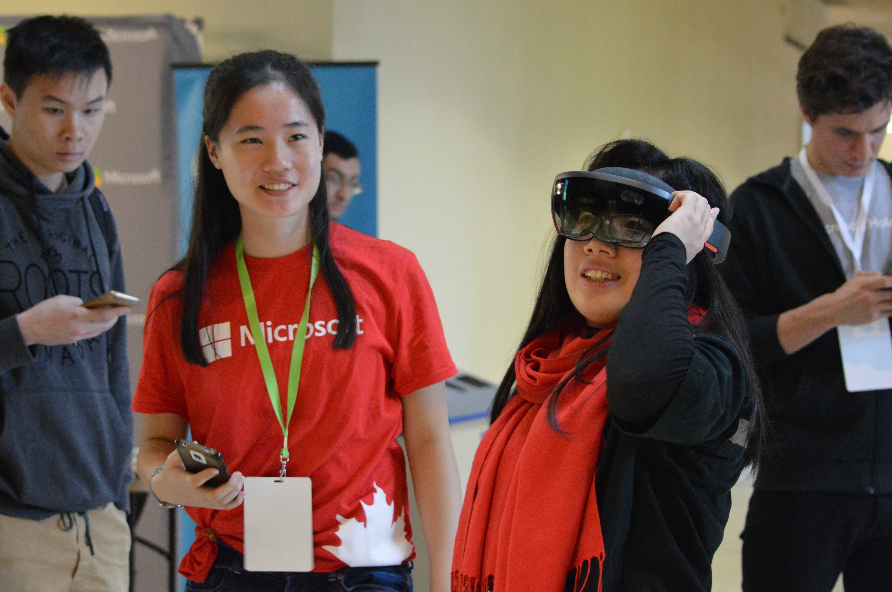
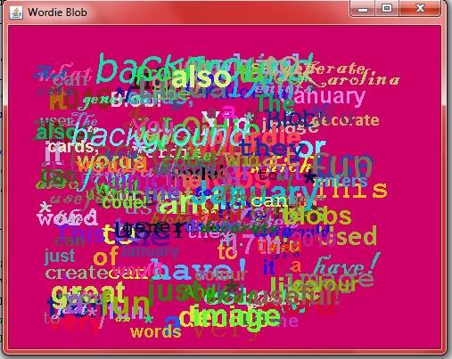
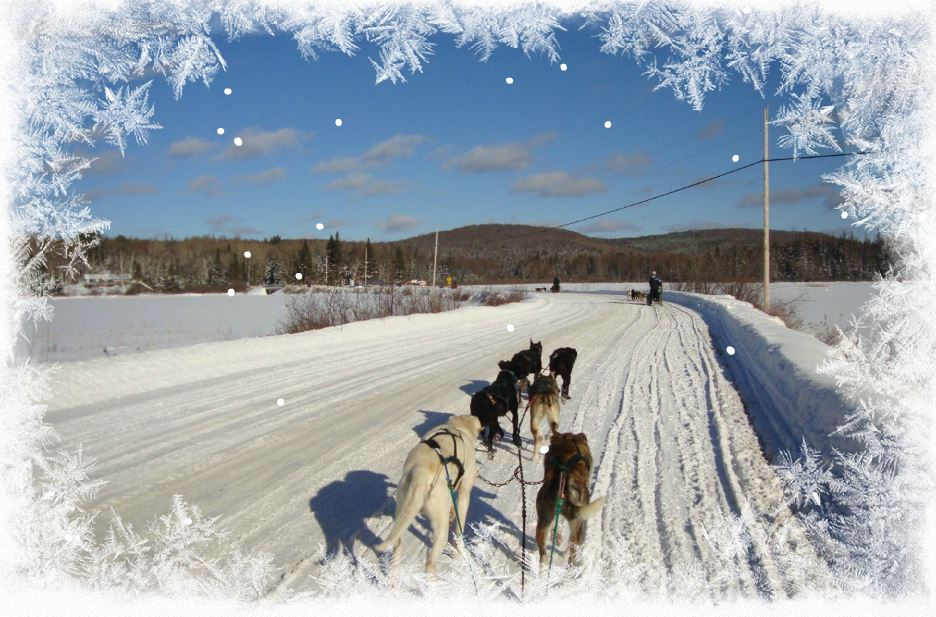
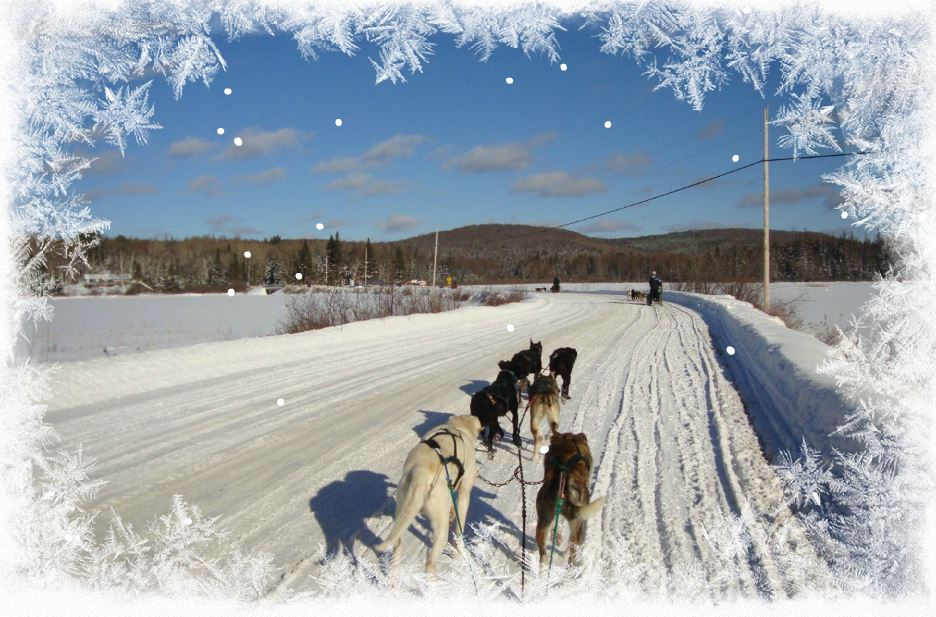
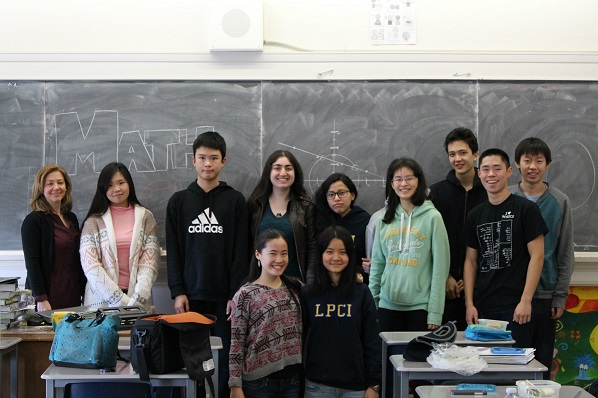
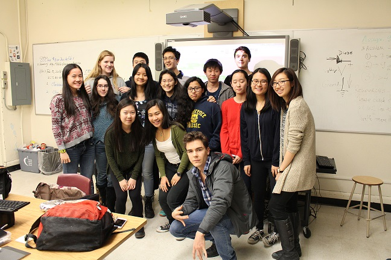
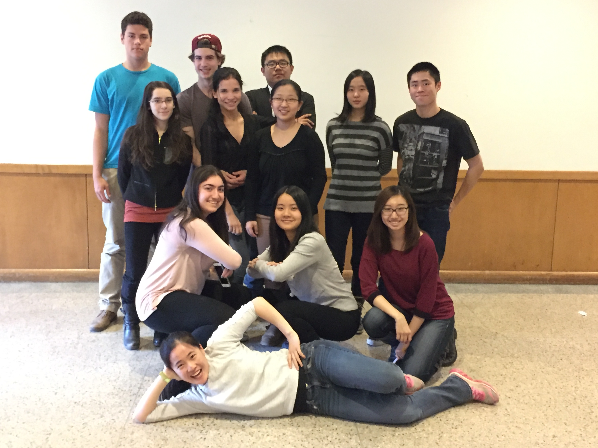
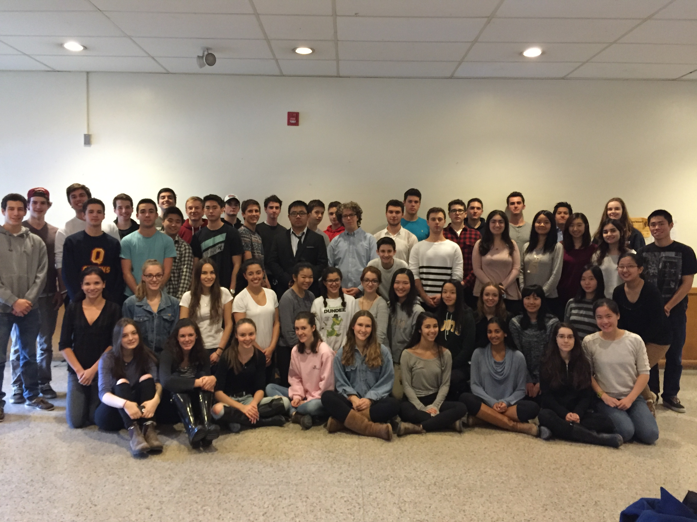

Karolina Xin
|
|
Toast Inc.
Boston | May 2017 - August 2017
Toast, Inc. is a cloud-based restaurant software company, with its headquarters in Boston MA. The company provides a restaurant management and point of sale system built on the Android operating system. Since its beginnings in 2012, Toast has grown exponentially, with over 600 employees and winning multiple awards, such as in 2016, New England Venture Capital Association (NEVCA) named Toast the winner of the Hottest Startup.
Tasks:
Worked with databases (PostgreSQL), front-end (HTML, CSS, JavaScript), and backend (Java with controller, model, and views structure) in order to create new features and upgrade old ones to enhance user experience in Toast restaurant management system
Created TAF (Selenium) and ITests for every project finished creating, while also debugging code and using Github for code review
Audited user creation and modifications in postgres and hibernate
North Toronto Aquatic Club
Toronto | Winter 2014 - Summer 2016
NTAC was founded in 1968 by neighbourhood parents. It has grown from 52 swimmers, to over 700 swimmers per year, with classes at Glenview Pool and Lawrence Park pool.
Tasks:
Ensure students learn proper strokes and water safety skills, and to have confidence in the water
Create a healthy, safe, swimming environment for everyone to be able to learn in
Learnt how to manage classes of different ages (5 to 13 years old)
Created lesson plans and report cards
North Toronto Aquatic Club
Toronto | Fall 2013 - Winter 2014
Assist the swim instructor on teaching and maintaining a healthy swimming environment for students
Tasks:
Gained experience on managing classes, and how to design an effective lesson plan depending on the age group
Current Volunteer Experience
Microsoft
Waterloo | Fall & Winter 2016/17
Microsoft Student Program (MSP) is a student program that is in more than 110 countries around the world. MSP’s share their knowledge for technology towards other students, and inform them about what latest technologies Microsoft has to offer.
Tasks:
Co-organized events, such as Azure Day/Imagine Cup, by giving information at booths and planning ideas
Learnt about Visual Studio, Virtual Reality, and chat bots through technical workshops organized by Microsoft
Represent Microsoft at hackathons by assisting with demos and helping to answer any questions

Math Society (i.e. MathSoc)
Waterloo | Fall & Winter 2016/17
MathSoc (i.e. Math Society) represents students in the Math Faculty and their interests which include the Math C&D cafe, mathNews, and student services (e.g. lounge space and exam bank)
Tasks:
Largest turnout to our Math events (137 people), by organizing and advertising the events with 5 First-Year Reps
Communicate between First-Years and the MathSoc Council so that they can get their voice heard
Influenced decision on which clubs get money, and changes to the Math Faculty, by attending budget and general meetings
Decide what the application for honorary lifetime membership is, and help with nominations
Women in Computer Science Committee (WiCS)
Waterloo | Winter 2017
WiCS is a student-run committee that supports the success of women in computer science at the University of Waterloo, through events, mentorships, outreach programs, and support for cis, trans women, and non-binary individuals.
Tasks:
Advertised and informed Waterloo students about upcoming WiCS events to achieve large turn-outs, using Social Media sites, emails, posters, and word-of-mouth
Collaborated with other WiCS members to shares roles, delegate tasks, and to plan future events
Influenced decision on which clubs get money, and changes to the Math Faculty, by attending budget and general meetings
Learnt github and putty terminal to use Internet Relay Chat (IRC
Projects
Web App extension off of Toast, to connect Toast Restaurants to homeless shelters in the area to reduce food waste while helping those in need
Tasks:
Pitched successfully to Toast, and scheduled meetings with Toast executives to discuss incorporating ToastFull into the company
Used Java, XML, JavaScript
Used JSONS and Python
Made for indesicive people, as this app asks the user a series of questions to help the user make a decision. There are various topics, ranging from deciding on where they want to go for vacation, to choosing the food that matches your mood.
Tasks:
Google Maps API used to show places nearby that match what the user answered in the quiz
Learnt Android Studio and XML in less than 24hrs
Teamwork and self-learning skills
Used Yahoo! Weather API so that the bot can determine the weather in any city
Tasks:
Used Yahoo! Weather API so that the bot can determine the weather in any city
Also used Detroit Bus API so the bot can also determine when the bus will arrive depending on which bus stop you type in
Used JSONS and Python
Teamwork and self-learning skills (e.g. didn’t know Python before hand
An interactive, Java arcade game
Tasks:
Used Java and included computer-controlled players - super user-friendly
Games include: Connect-4, One-Player Tic-Tac-Toe, Matching Cards, Maze with multiple levels
Used JSONS and Python
Generates a word cloud given the words the user enters in
Tasks:
The user can decide background colour, and the text sizes, colours, and fonts are all random
Ensured that all words weren't off screen and spread out
Used Java graphics, and the random function
User-friendly, and can personalize background colour too

Awards
Received sponsorship from Waterloo, and attended, Grace Hopper Conference (October 2017). The conference is the largest gathering of women in computing. The venue for this year was in Orlando Florida, with around 18 000 attendees.

Awarded to a graduating student who showed the most leadership and involvement for Lawrence Park highschool, throughout his/her entire highschool career
International Award - World's leading Youth Achievement Award
This award is given once a participant has done at least 6 months of service, skills, and physical recreation. In addition, the participant must go on at least a 5 day long adventurous journey
 

Lawrence Park CI
This award is given to a student after every yearly term of school, who has the highest mark in Computer Science in his/her grade. I peaked at 100%.
University of Waterloo
Awarded to students with an average of 90% or higher
Lawrence Park CI Athletic Committee
Awarded to a female student who showed the most passion and improvement in badminton
Canadian Computing Competition Certificate of Distinction (Top 25%)
Semi-Finalists for ECOO York Computing Competition (team event)
2nd overall at DECA Regionals
Euclid Math Contest Certificate of Distinction (Top 25%) and 2nd place at Lawrence Park CI
Other Volunteer Experience
Lawrence Park CI
Toronto | Winter 2013 - Summer 2016
Advanced Java coding skills, and worked on computer contest questions (Waterloo CCC)
Teach coding skills to members
Took up contest-level math questions for math club members
Encouraged more girls to go into coding and STEM fields
Created math games, such as math relay races to make the club more dynamic and interesting
 
Lawrence Park CI
Toronto | Winter 2015 - June 2016
Primarily helped organize training of members and meetings
Created material for members to study from
Led training workshops to ensure all members are ready for the competitions
As a result, this was our highschool's most successful year at DECA
 
Lawrence Park CI
Toronto | Winter 2015 - June 2016
Assigned work to the committee to get the yearbook done
Coordinated and led meetings
Gave contructive criticism to improve our yearbook pages
Communicated with teachers and staff to get all the photos in on time, and to make sure all the pages got approved by the school